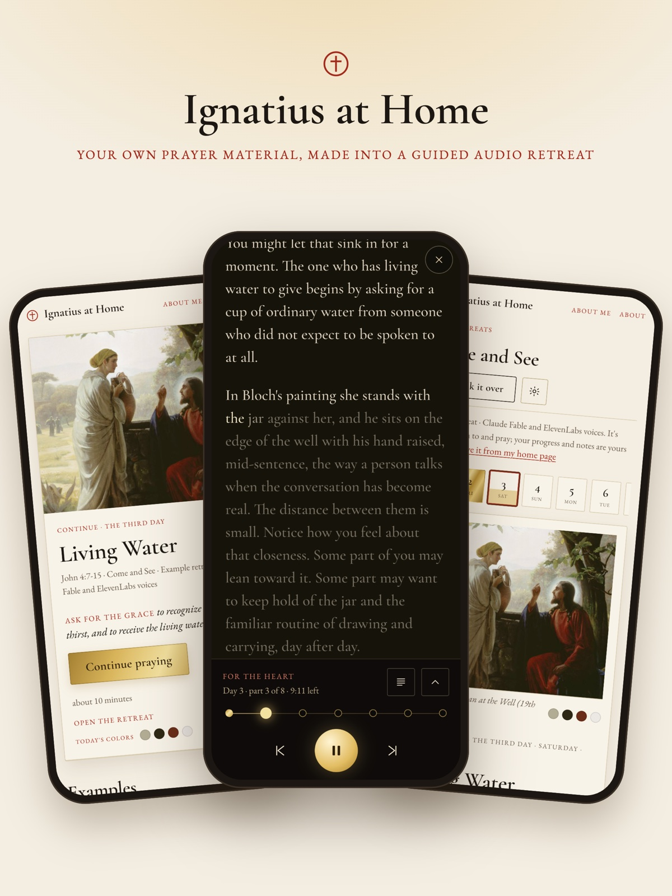

Ignatius at Home
A meditation app that turns reading material, such as a handout, a few passages, or just an idea like "seven days on a theme", into a guided audio series listened to one day at a time. Each day pairs a reading with a slow, repeated listening, a short reflection, some background on the text, a stretch of quiet between two bells, and a painting to sit with. I built it for 15-113, Effective Coding with AI, as the course's server-side project on Render.
- The model plans each day and writes the guidance around the reading, but never rewrites the source text. Readings come from the person's own material or a public-domain source.
- It is free for anyone: open models on an academic cloud, free Microsoft voices, and the free tiers of six search services, with Claude and ElevenLabs as the paid tier.
- Notes a person writes about themselves stay private, even in the build logs of the shared examples.
Try it · Source, screenshots, and prompt log on GitHub · Backend and architecture · The original design spec